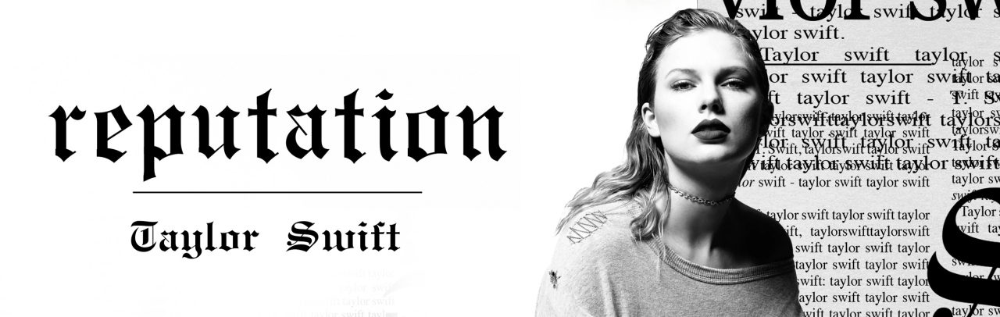
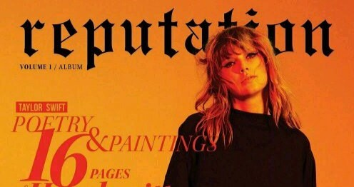
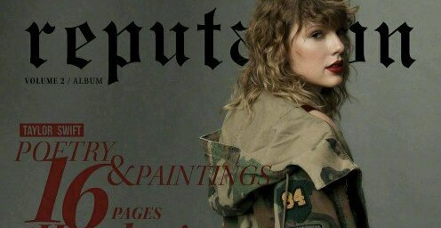

2016年7月，金·卡戴珊公开了泰勒·斯威夫特与其丈夫坎耶·维斯特的不实电话录音后，霎时泰勒·斯威夫特饱受非议。金·卡戴珊当时以一堆
蛇的表情符号暗指泰勒蛇蝎心肠，引领了一大批人到泰勒·斯威夫特的社交账号下用蛇的表情留言讽刺她 [9] 。泰勒·斯威夫特以“名望”
（reputation）做为主题，想借此回应这几年的纷纷扰扰。
《reputation》的专辑封面由摄影师Mert & Marcus拍摄，封面色彩为黑白，照片展现的是泰勒·斯威夫特胸部以上的人身，一旁则是大大小小的
报纸文章和标题字样，该专辑的封面字体与坎耶·韦斯特2016年专辑《The Life Of Pablo》巡回演唱会时的宣传字体一样。
专辑除了由泰勒·斯威夫特一手监制外，还邀请了搭档杰克·安托诺夫，制作人马克斯·马丁及希尔贝克等人联袂操刀。《End Game》的部分灵感
来源于艾德·希兰所做的一场梦，他在纽约的一家酒店写下了自己的那部分歌词，内容引用了他和未婚妻之间的浪漫关系，以及他梦到过、自己想做的
一些事。
01. ...Ready For It?
02. End Game (feat. Ed Sheeran and Future)
03. I Did Something Bad
04. Don't Blame Me
05. Delicate
06. Look What You Made Me Do
07. So It Goes...
08. Gorgeous
09. Getaway Car
10. King of My Heart
11. Dancing With Our Hands Tied
12. Dress
13. This Is Why We Can't Have Nice Things
14. Call It What You Want
15. New Year's Day

专辑《reputation》不仅是泰勒·斯威夫特的原创心血，更意味着她华丽转身，霸气回归，这张专辑就像是她给全世界的一张宣誓词。专辑的主题与
风格，都是从自己的生活中所提炼，她歌里所诠释的情感与主题，让听众们更深刻的感受到了她的专辑就是她的生活。专辑的封面为黑白照片，显得较为
压抑，不同于过往色彩大胆、轻松跳跃的风格。专辑的封面暗喻泰勒再也受不了八卦媒体对她的报道，颈上的链子代表着压抑、喘不过气。从背景、制作、
音乐风格来说，都是泰勒·斯威夫特音乐之路上里程碑式的专辑。
《reputation》不同于以往轻松跳跃的曲风，以及青春成长的主题，无论曲风还是封面都为更压抑的黑白风。这也表现了她霸气回归，赤裸裸向世界
质问一切荣誉、道德绑架对自己的伤害，这是一部证明她如何将原来的自己全部抛弃重生的纪实专辑。《...Ready For It?》演绎出泰勒·斯威夫特将不
再被媒体所束缚，告别过去的自己，重获新生。《Look What You Made Me Do》同专辑封面照片一样，走黑暗、冷酷的风格路线。歌曲一改风格，全程
暗黑冷酷。
《Gorgeous》毫不掩饰地表达了与男友乔·阿尔文热恋时的感觉，充满了少女恋爱的气息，让观众听完后耳目一新，这首由布莱克女儿开头的歌曲不
光歌词押韵，而且旋律抓人，能够引起听众共鸣。重视流行民谣的她，为整张专辑增加了暖心柔情的一面，《New Year's Day》表达了泰勒·斯威夫特尽
管受过很多伤，但她依然憧憬爱情的心境。

| 获奖记录 | |||||||||||
|---|---|---|---|---|---|---|---|---|---|---|---|
| 时间 | 颁奖机构 | 授予奖项 | 获奖作品 | 结果 | |||||||
| 2016 | 加拿大朱诺奖 | 年度国际专辑 | 《reputation》 | 提名 | |||||||
| BreakTudo奖 | 年度专辑 | 《reputation》 | 提名 | ||||||||
| 公告牌音乐奖 | 最佳畅销专辑 | 《reputation》 | 获奖 | ||||||||
| 最佳二百强专辑 | 《reputation》 | 提名 | |||||||||
| A2IM自由奖 | 独立影响奖 | 《reputation》 | 获奖 | ||||||||
| 全美音乐奖 | 最佳流行摇滚专辑 | 《reputation》 | 获奖 | ||||||||